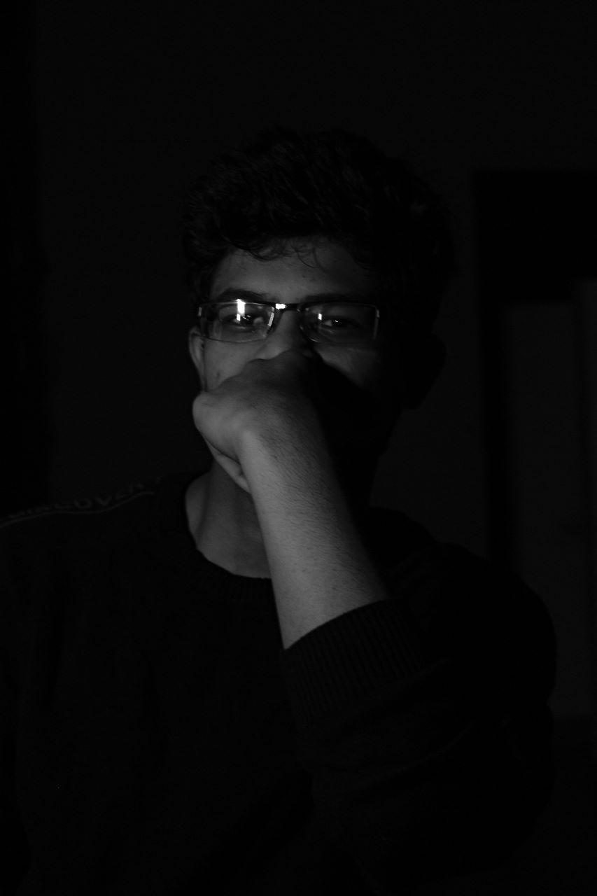
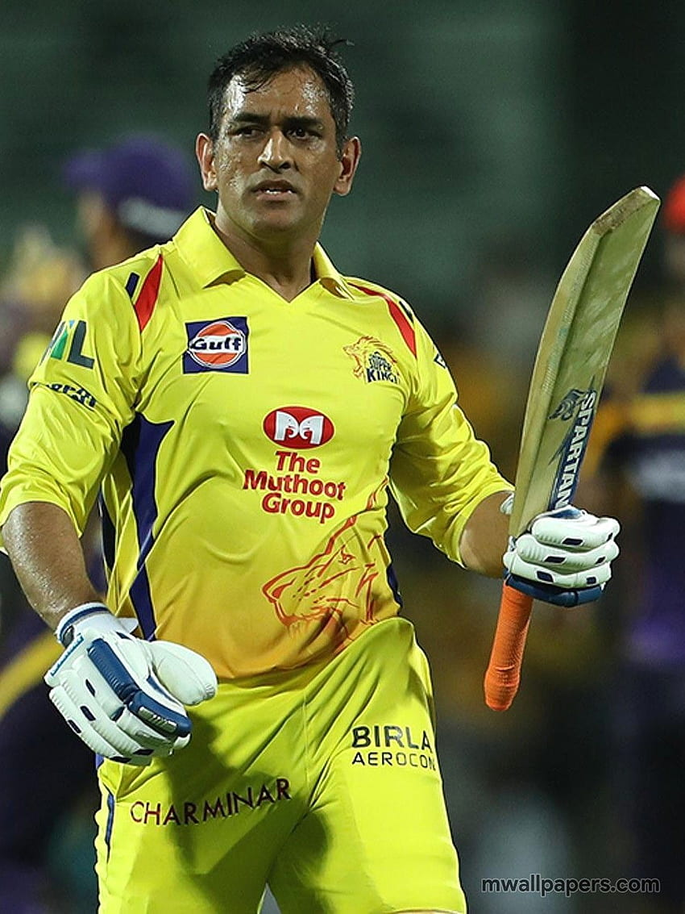

Hey there! I'm Teja Vutla, a passionate computer science engineering student currently
in my second year at VIT Vellore.
I am 19 years old, I am from Mangalagiri in Andhra Pradesh, India.


Education and Skills
I am pursuing my Bachelor's degree in Computer Science Engineering, where I've been immersing myself in the world of
algorithms, data structures, and software development. My journey in programming began with languages like C and C++,
and I've since expanded my repertoire to include Java, Python, HTML, and CSS. Each language has opened up new avenues
of learning and creativity, fueling my curiosity for problem-solving and innovation.
Hobbies and Interests
Beyond the realm of coding, I find joy in various hobbies that keep me balanced and energized. I have a deep love for reading
books across different genres, allowing me to explore diverse perspectives and immerse myself in captivating narratives.
When I'm not buried in a book, you'll likely find me on the cricket field, channeling my competitive spirit and enjoying the
camaraderie of team sports. Chess is another passion of mine, offering a strategic challenge that sharpens my analytical
skills and provides endless fascination.


Passions and Projects
Beyond the lines of code, I find joy in various hobbies such as reading, playing cricket, and engaging in strategic battles on thechessboard. These pursuits not only keep me balanced but also fuel my creativity and critical thinking skills.
Throughout my academic and extracurricular endeavors, I've had the privilege of working on diverse projects, ranging from software
development to machine learning applications. Each project has been a journey of discovery, allowing me to apply my skills in real-world
scenarios and make tangible contributions to the field of technology.
More About Me
In addition to my academic pursuits and hobbies, I have a keen interest in exploring new technologies and understanding
their implications for the future. I'm fascinated by artificial intelligence, cybersecurity, and the potential of emerging
technologies to revolutionize industries and reshape society. As an avid learner and tech enthusiast, I'm always seeking out
opportunities to expand my knowledge and make meaningful contributions to the world around me.